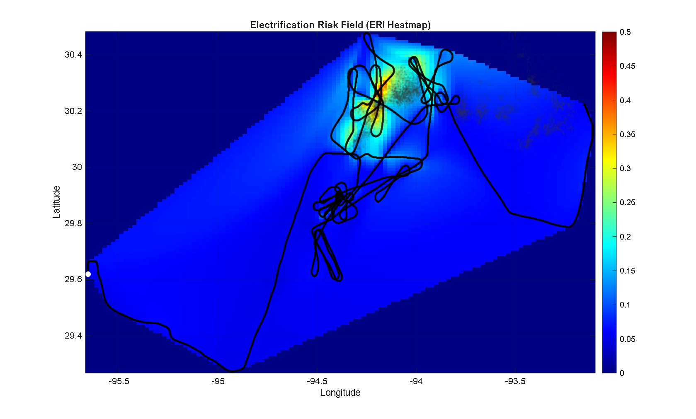
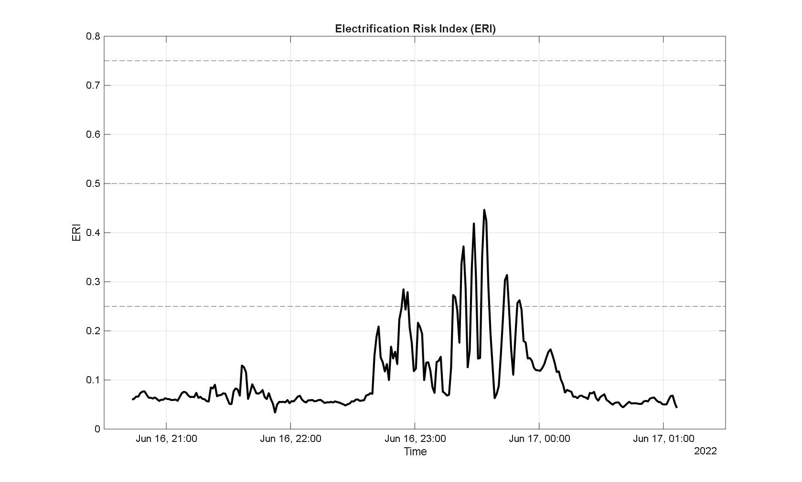
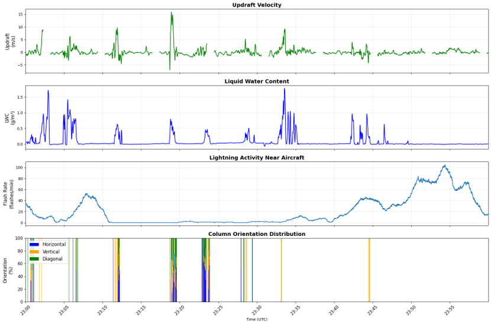
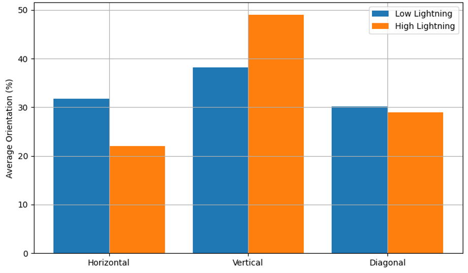
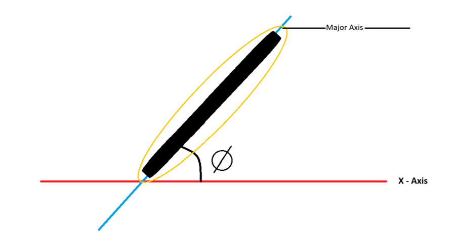
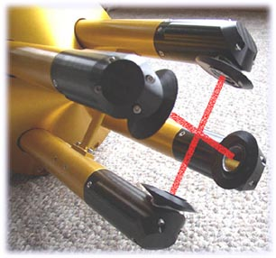
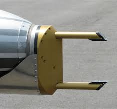

Integrated Microphysics • Lightning Mapping • Orientation Dynamics
This project presents a data-driven framework for analyzing atmospheric electrification using airborne microphysics, radar observations, and lightning activity.
The system integrates multiple datasets into a unified Electrification Risk Index (ERI) that quantifies storm intensity and charge separation potential.
Analysis and fusion of synchronized datasets to test the hypothesis that atmospheric electric fields influence the alignment and shape of cloud ice crystals.
Identify microphysical indicators that can be used in early warning systems for lightning hazards.
Peak ERI (Storm Core): 0.42 — High Electrification






ERI = w₁·Flash + w₂·Size + w₃·Reflectivity + w₄·Updraft + w₅·LWC
This project integrates multiple synchronized datasets collected during airborne observations of convective storms using the NRC Convair-580 research aircraft.
High-resolution particle imagery is captured using optical array probes, enabling analysis of particle size, shape, and orientation.


Lightning activity is obtained from the Houston Lightning Mapping Array, providing spatial and temporal information on flash events.
Radar data is used to characterize storm intensity and precipitation structure.
Aircraft measurements include altitude, temperature, liquid water content, and vertical wind (updraft).
Wendy Olo • Uchenna Ezugworie • Daniel Okorodudu